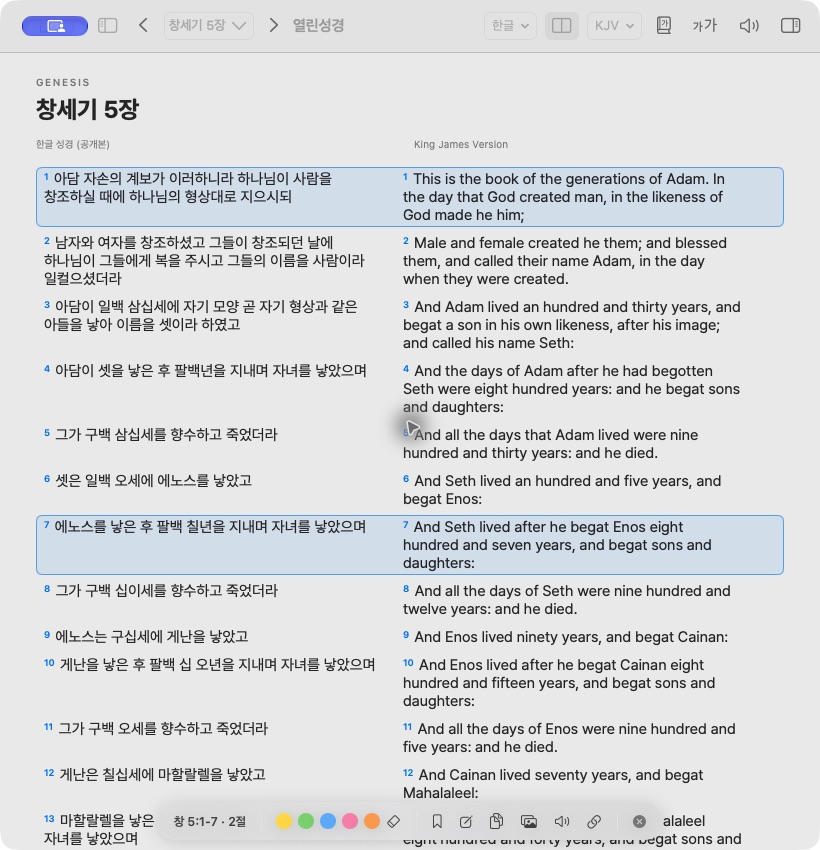

THE BOOK OF GENESIS
창세기 1장
한글 성경 (공개본)·구약절을 선택해 묵상을 남겨보세요
한글 성경 (공개본)KING JAMES VERSION
낱말로 찾거나, 책과 장·절을 입력해 바로 이동할 수 있어요.
잠시 멈추고, 마음에 담아보세요.
읽고, 기억하고, 일상 속에서 다시 만나는 말씀.
선택한 구절에 책갈피와 묵상을 남겨보세요. 이 프리뷰의 기록은 새로고침하면 초기화됩니다.
계획은 부담스럽지 않게, 진행 상황은 분명하게. 아래는 통독 계획 선택 시안입니다.
매일 고른 분량으로 성경 전체를 읽어요.
복음서에서 시작해 신약의 흐름을 따라가요.
읽을 역본을 고르고, 두 역본을 함께 비교해보세요.
가져오기 동작은 실제 앱에서 사용할 수 있습니다.
본문의 크기와 간격을 취향에 맞게 조절해보세요.
프리뷰에서는 공개 데이터에서 가져온 여섯 장을 체험할 수 있어요.
